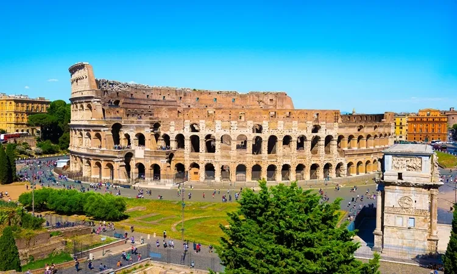
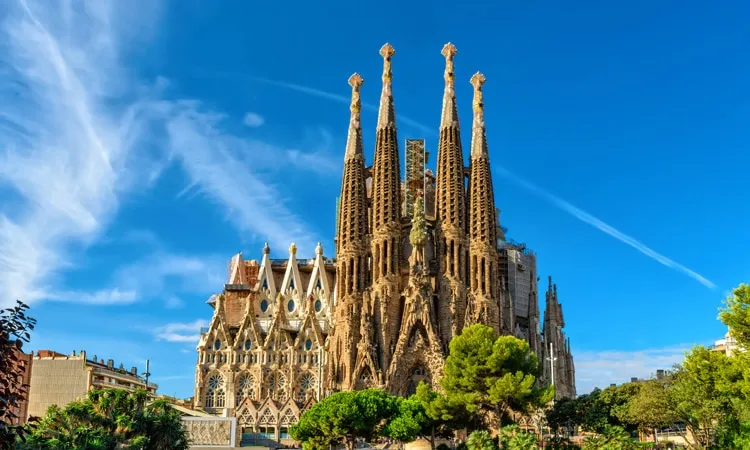
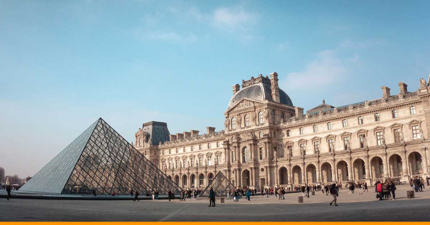
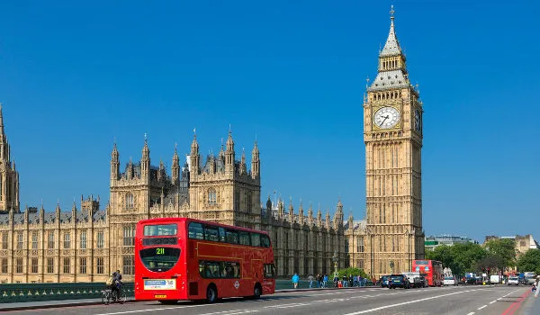

Pontos Turisticos da Europa
Coliseu em Roma, Itália
O Coliseu, cujo nome oficial é Anfiteatro Flaviano, começou a ser construído em 72 d.C e demorou oito anos para ficar pronto. A construção, de concreto e areia, foi comandada pelo imperador Flávio Vespasiano – homenageado pelo filho Tito, que governava Roma quando as obras acabaram.
Ao visitar hoje o local, símbolo de Roma e da história da civilização, os turistas podem entender como funcionava esse imenso anfiteatro com capacidade para cerca de 70 mil pessoas, com seus caminhos subterrâneos, rampas e alçapões.
Torre Eiffel em Paris, França
A Torre Eiffel foi construída para a Exposição Universal de 1889, que celebrava os 100 anos da Revolução Francesa. Uma competição de design arquitetônico selecionou o projeto do engenheiro Gustave Eiffel, que projetou o monumento como arco de entrada da exposição, no Champ de Mars.

De cada um dos andares – e, principalmente, do alto da torre – os visitantes têm uma vista especial de Paris, e vale repetir a visita durante o dia e à noite, pois a experiência é única em cada momento
Sagrada Família em Barcelona, Espanha
Em construção há 135 anos, a Sagrada Família deve ficar pronta somente em 2026, mas há muito tempo atrai visitantes de todo o mundo, que enfrentam filas intermináveis para conhecer a edificação.
A basílica que se tornou um dos principais pontos de visitação para quem vai à Barcelona começou como um projeto neogótico de Francisco de Paula del Villar e Lozano.
A pedra fundamental da igreja foi lançada em 1882 e, no ano seguinte, a edificação passou para as mãos de Antoni Gaudí, arquiteto catalão reconhecido mundialmente por seus trabalhos originais e cheios de criatividade.
Museu do Louvre em Paris, França
Já do lado de fora impressiona o contraste da moderna pirâmide de vidro construída na década de 1980 com a fachada do palácio do fim do século XII, que abrigou chefes de estado franceses até 1870.
O Museu do Louvre é parada obrigatória para quem visita Paris, com suas coleções que remontam desde civilizações antigas até a arte ocidental da Idade Média.
Aproximar-se de obras famosas, como a inigualável Mona Lisa de Leonardo da Vinci, pode ser uma tarefa difícil devido ao grande número de visitantes, mas vale a pena ter persistência.
Big Ben em Londres, Inglaterra
É só falar em Londres que todo mundo imagina o famoso relógio às margens do Rio Tâmisa. Localizado na Torre Elizabeth, no Parlamento Inglês, Big Ben é, na verdade, o apelido do imenso sino, de mais de 13 toneladas, que fica no alto da torre.
Conhecido por sua absoluta precisão, o relógio parou pouquíssimas vezes desde sua inauguração em 1859. Nem mesmo a bomba que atingiu o parlamento durante a Segunda Guerra Mundial fez com que ele deixasse de marcar as horas.
Torre de Belém em Lisboa, Portugal
Considerada Patrimônio Cultural da Humanidade pela Unesco, a edificação foi construída entre 1514 e 1520 às margens do Rio Tejo.
O monumento teve importante função: começou como projeto de construção defensiva na época de Dom João II, depois substituiu a nau artilhada ancorada nas águas do Rio Tejo durante o reinado de Manuel I e foi utilizada como aduaneiro, sinalização, farol e até masmorra para presos políticos nos anos seguintes.

A arquitetura sofreu influências islâmicas e de estilo manuelino, com elementos que remetem ao período das grandes navegações. A fachada é rica em detalhes, com adornos, cruzes e o escudo real de Dom Manuel I.
Do lado de dentro é possível acessar a sala do governador, sala dos reis, sala das audiências, capela e terraço, de onde se tem uma bela visão de Lisboa.